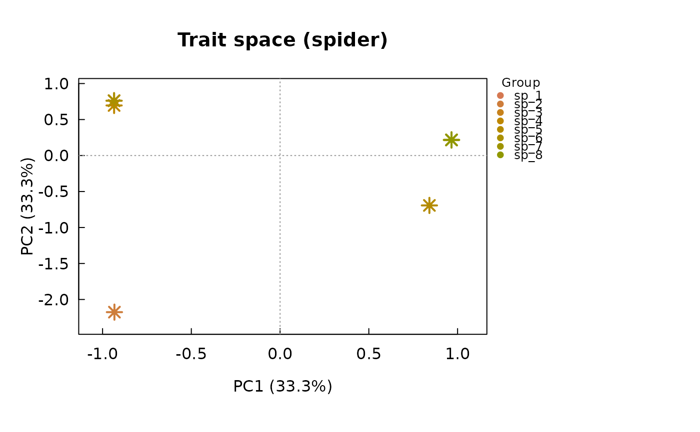

Derives quantitative "phylogenetic trait" axes from a phylogenetic tree,
by Principal Coordinates Analysis (PCoA) of the tree's patristic
(cophenetic) distances among species. The resulting axes summarise a
species' overall phylogenetic position as a small set of numeric
variables, in a species-plus-axes data.frame deliberately shaped so
it can be passed directly as the traits argument of trait_space() –
letting you build a "phylogenetic space" with exactly the same ordination
machinery used for morphological trait spaces elsewhere in this package,
and then compare functional and phylogenetic diversity loss (e.g. with
bootstrap_functional_space() or species_sensitivity()) using the same
statistics on both.
Arguments
- tree
An object of class
"phylo"(e.g. fromape::read.tree(),ape::read.nexus(), or the bundledload_fishmorph_phylogeny()), with tip labels matching the species names used elsewhere in your analysis (e.g.fish$metadata$species, with spaces, underscores, and dots treated as interchangeable – see Details).- species
Optional character vector of species to retain (typically your actual species pool, e.g.
levels(factor(fish$metadata$species))). Species not found amongtree$tip.labelare dropped with a warning; defaults to all oftree$tip.label.- k
Integer, the number of phylogenetic axes to keep. Defaults to all axes with a (corrected, if
correction != "none") positive eigenvalue.- correction
Character,
"none"(default),"cailliez", or"lingoes"– passed toape::pcoa()'scorrectionargument. Patristic/cophenetic distances are not guaranteed to be perfectly Euclidean, which can produce a handful of small negative eigenvalues in the decomposition;"cailliez"or"lingoes"add a constant to the distances to remove them (see?ape::pcoa). Legendre & Anderson (1999) found the Cailliez correction can inflate Type I error in downstream permutation tests, so treat"lingoes"as the more conservative choice if a correction is needed for such a test;"none"simply drops the negative-eigenvalue axes (theape::pcoa()default).- ultrametric
Logical, coerce
treeto be ultrametric (constant root-to-tip distance) before computing distances, usingphytools::force.ultrametric(), if it is not already (to tolerance; seeape::is.ultrametric()). Defaults toTRUE, matching a time-calibrated phylogeny's own assumption; set toFALSEiftree's branch lengths are not meant to represent a strict molecular clock (e.g. a phylogram in substitutions/site) and cophenetic distance is still an appropriate summary for your purposes.- ultrametric_method
Character,
"nnls"(default) or"extend", passed tophytools::force.ultrametric()'smethodargument whenultrametric = TRUEandtreeis not already (numerically) ultrametric; see?phytools::force.ultrametric– this is a numerical adjustment for representing the tree, not a re-estimation of divergence times, and is reported with amessage()when triggered.- x
An object of class
"intrait_phylopcoa", as returned byphylo_pcoa().- ...
Currently unused.
Value
An object of class "intrait_phylopcoa", a list with elements
traits (a data.frame, one row per species, with a species column
and k numeric columns PCoA1, PCoA2, ... – ready to pass as
traits to trait_space(), which auto-detects groups from a
species column), var_explained (percent variance explained by each
retained axis), k, correction, tree (the pruned, and possibly
ultrametric-coerced, tree actually used), and dropped_species (any
species entries not found in tree$tip.label).
Invisibly returns x.
Details
Species names are matched against tree$tip.label after collapsing any
run of spaces, underscores, and/or dots to a single underscore in both
(the various separator conventions used by different tip-label/species
sources – e.g. "Barbus_barbus", "Barbus.barbus", as in the bundled
load_fishmorph_phylogeny() tree), so species = "Barbus barbus"
matches a tip labelled "Barbus.barbus" without requiring the caller to
reformat names first. At least 3 matched species are required for a
meaningful ordination.
This function deliberately only covers the generic, reusable step of turning a tree plus a species list into ordination axes – it does not attempt taxonomic name resolution, tree sourcing, or trait/occurrence data assembly, all of which are specific to wherever your tree and species list come from and are out of scope for this package.
References
Cailliez, F. (1983). The analytical solution of the additive constant problem. Psychometrika, 48, 305-308. doi:10.1007/BF02294026
Lingoes, J. C. (1971). Some boundary conditions for a monotone analysis of symmetric matrices. Psychometrika, 36, 195-203. doi:10.1007/BF02291398
Legendre, P., & Anderson, M. J. (1999). Distance-based redundancy analysis: testing multispecies responses in multifactorial ecological experiments. Ecological Monographs, 69(1), 1-24. doi:10.1890/0012-9615(1999)069[0001:DBRATM]2.0.CO;2
Examples
# \donttest{
if (requireNamespace("ape", quietly = TRUE)) {
set.seed(1)
tree <- ape::rcoal(8, tip.label = paste0("sp_", 1:8))
pp <- phylo_pcoa(tree, k = 3)
pp
# use directly as `traits` in trait_space(): groups auto-detected from
# the `species` column, exactly like a morphological trait matrix
ts_phylo <- trait_space(pp$traits, na_action = "fail", log_transform = FALSE)
plot(ts_phylo)
}
#> Warning: Dropping non-numeric column(s) from the ordination: species
#> flag_outliers: 8 group(s) have fewer than outlier_min_n = 5 specimens and were not screened (distance still reported, flagged = NA).

# }